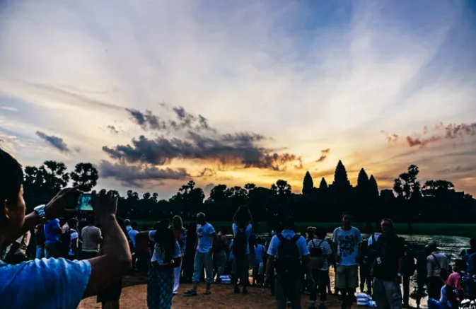
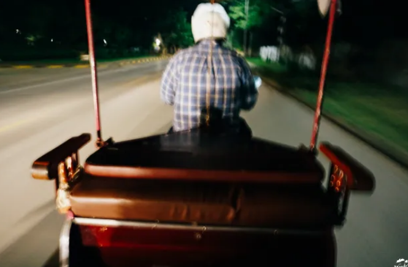
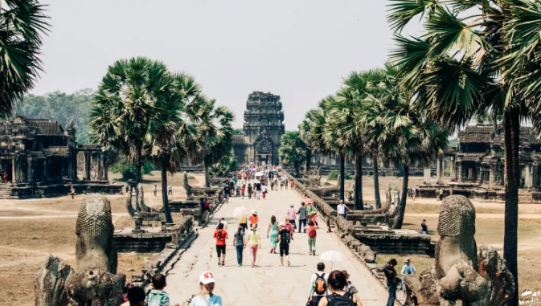
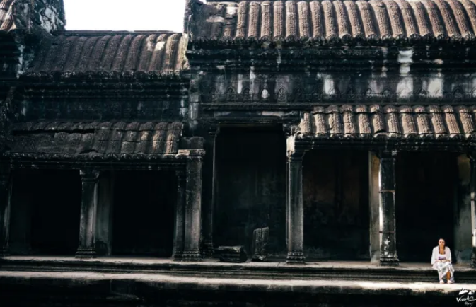

Angkor Wat:
นครวัด ที่ทั้งเหมือน และไม่เหมือนกับที่คิด
ฉันยืนอออยู่ท่ามกลางฝูงชนมากมาย เหมือนเดินอยู่ในตลาดนัด ท่ามกลางอากาศร้อนอบอ้าวจนต้องอาบเหงื่อต่างน้ำ ฉันเดินลงข้างทาง หาที่หลบมุม
วางเป้ลงข้างบันไดหินที่ทำขึ้นจากศิลาแลงผุกร่อนแต่ยังคงทนทานสู้กาลเวลา อากาศร้อนๆ ยามบ่ายบังคับให้ฉันต้องรวบผมขึ้นสูง แล้วทนฝืนใส่หมวกเพื่อกันแสงแดดจ้าที่ดูไม่ค่อยจะปรานีกับใคร แปลกที่เขมรอากาศร้อนกว่าบ้านเราเยอะ ทั้งๆ ที่ดูเหมือนจะมีพื้นที่สีเขียวเยอะกว่า
‘ไม่ไหวแล้ว พรุ่งนี้ค่อยมาใหม่’ ฉันถอดใจ หลังจากทนฝูงชนที่พลุกพล่านมากเกินไปไม่ไหว ดูเหมือนผู้คนจากทั่วโลกจะพร้อมใจกันหลั่งไหลมาที่นี่
เด็กเขมรตัวเล็กๆ หลายคน วิ่งตามนักท่องเที่ยวเพื่อขายโปสการ์ดกับพัดไม้กันจ้าละหวั่น ฉันโบกมือเพื่อบอกปัดไปหลายรอบ โชคดีที่เด็กๆ สนใจนักท่องเที่ยวฝรั่งมากกว่า
วันต่อมา… ฉันตื่นตั้งแต่ตี 5 เพื่อไปดูพระอาทิตย์ขึ้นที่นครวัด หวังไว้ในใจว่าการไปช่วงเช้าๆ อากาศจะร้อนน้อยกว่าช่วงบ่าย ฉันนัดลุงขับรถสามล้อคนหนึ่งให้มารับหน้าที่พัก ลุงก็มารับตรงเวลา รถมอเตอร์ไซค์สามล้อของเราขับไปตามถนนเมืองเสียมเรียบอย่างไม่รีบร้อน
รถสามล้อของเราวิ่งผ่านป่าข้างทางที่มืดมิด มีแสงไฟจากถนนเป็นช่วงๆ ฉันหันมองข้างทางเป็นระยะๆ พลางสงสัยว่า ป่าในเมืองจะมีสิงสาราสัตว์อยู่หรือเปล่า หากมี…พวกมันจะตื่นหรือหลับอยู่ในเวลานี้…

ตี 5 ครึ่ง ฉันเดินทางถึงนครวัด มีกลุ่มนักเดินทางมาถึงก่อนหน้าฉันแล้วมากมาย เราต่างพกไฟฉายมา เพราะในยามนั้นทุกอย่างยังมืดมิด เดินไม่เห็นทาง ฉันเดินลึกเข้าไปเรื่อยๆ อย่างคนรู้ทาง ผ่านโป๊ะลอยน้ำขนาดยักษ์ที่ทำไว้เพื่อให้นักท่องเที่ยวเดินข้ามสระบัว
นักเดินทางทุกคน ต่างจับจองหามุมถ่ายรูปเพื่อให้ได้ภาพออกมาน่าประทับใจที่สุด ส่วนฉัน เดินออกไปอีกฝั่ง เพื่อบันทึกภาพพวกเขาเอาไว้ ทุกคนยอมตื่นเช้า ไม่ได้กินข้าว เดินทางมาที่เดียวกันราวกับนัดกันไว้
เพื่อมาให้สถานที่แห่งนี้ประทับรอยความทรงจำให้พวกเขาเอากลับบ้าน  ฉันถือเป็นเพื่อนร่วมอุดมการณ์
เรายืนรอกันอยู่นาน จนท้องฟ้าเริ่มเป็นสีชมพู ตามมาด้วยสีเหลือง สีส้ม ทุกคนใจจดใจจ่อ ราวกับมาดูโชว์สุดตระการตา
พระอาทิตย์ขึ้นแล้ว…

ในความคิดของใครหลายๆ คนที่อุตส่าห์เดินทางข้ามโลกมาถึงที่นี่เพื่อให้ได้นอนตายตาหลับ ดังคำที่มีคนเคยกล่าวไว้ อาจมองว่า นครวัดที่เต็มไปด้วยผู้คน ไม่ได้มีบรรยากาศเงียบสงบดังที่หวัง